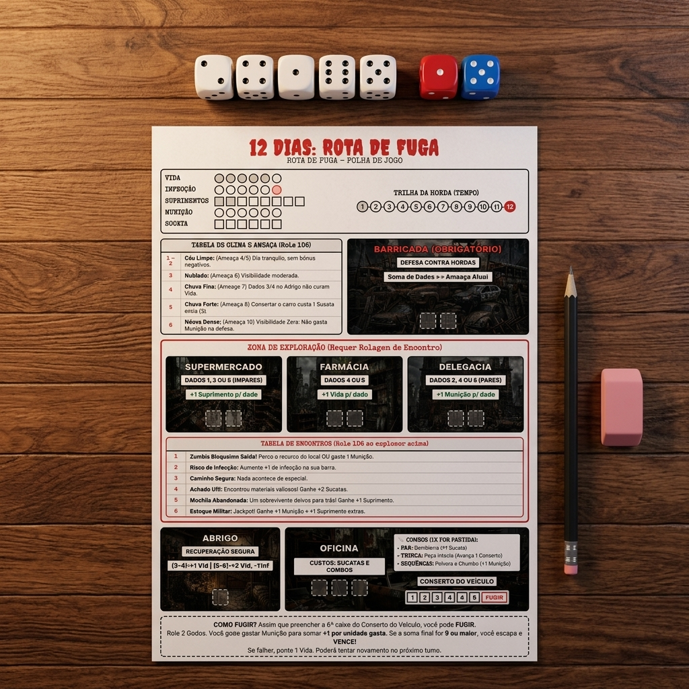

12 DIAS: ROTA DE FUGA
Manual de Regras PnP
Protocolo D6 // Sobrevivência Urbana Solo // Print & Play Edition
1. Introdução e Objetivo
Você é o último sobrevivente em uma metrópole tomada por uma epidemia zumbi. Sua única chance de escapar é consertar um carro abandonado. Você deve vasculhar os arredores perigosos em busca de peças e mantimentos básicos, enquanto fortifica sua barricada. Se demorar muito, a horda vai invadir seu abrigo.
- Objetivo de Vitória: Alcançar o nível final de conserto do carro (6) na Oficina e passar no Teste de Fuga Final.
- Condições de Derrota:
- Sua Vida ser reduzida a 0.
- Sua Infecção atingir o nível 6.
- A Trilha da Horda chegar ao espaço 12 (tempo esgotado).
2. Componentes Necessários
- 1 Folha de Jogo impressa (contendo medidores, zonas de dados e mapa).
- 5 Dados D6 comuns (para suas ações diárias, preferencialmente brancos).
- 2 Dados D6 extras (de cores diferentes, ex: 1 vermelho para Clima e 1 azul para Encontros).
- 1 Lápis e Borracha (ou tokens físicos) para marcar recursos na folha.
Exemplo de Setup

3. Os Medidores de Status (Tensão)
- Vida (0 a 6): Integridade física. Se chegar a 0, você morre.
- Infecção (0 a 6): Gravidade do contágio. Se chegar a 6, você se transforma.
- Suprimentos (0 a 8): Comida/água. Consome 1 por rodada. Se não houver suprimentos suficientes, perde 1 de Vida.
- Munição (0 a 6): Adiciona +1 na rolagem de defesa da Barricada ou fuga por unidade gasta.
- Sucata (0 a 6): Gaste na Oficina para reparar o veículo.
4. O Fluxo de Turno (Ciclo Diário)
Fase 1: Clima e Ameaça
Role 1 dado D6 (Dado de Evento) para determinar o clima do dia e a respectiva Ameaça Zumbi (força do ataque na Barricada):
| D6 | Clima | Efeitos e Debuffs | Ameaça |
|---|---|---|---|
| 1-2 | Céu Limpo | Dia tranquilo, sem bônus negativos. | 4 |
| 3 | Nublado | Visibilidade moderada, sem debuffs. | 6 |
| 4 | Chuva Fina | Dados 3 ou 4 alocados no Abrigo não curam Vida neste turno. | 7 |
| 5 | Chuva Forte | Consertar o carro na Oficina custa 1 Sucata extra (total de 3). | 8 |
| 6 | Névoa Densa | Visibilidade Zero: Você não pode gastar Munição para ganhar bônus na defesa da Barricada. | 10 |
Fase 2: Consumo
Reduza seu medidor de Suprimentos em 1 unidade. Se já estiver em 0 de Suprimentos, você sofre 1 de dano de Vida.
Fase 3: Rolagem de Ações
Role seus 5 dados D6 comuns. Estes são os valores que você terá para trabalhar hoje.
Fase 4: Alocação
Distribua seus dados fisicamente sobre a Folha de Jogo nas zonas desejadas: Barricada, Locais de Exploração, Abrigo e Oficina.
Fase 5: Resolução das Ações
Resolva os locais na seguinte ordem sugerida:
A. Barricada (Defesa Obrigatória)
Você pode alocar até 2 dados aqui. Some os valores dos dados alocados. Você pode gastar Munição para adicionar +1 ao total por munição gasta (exceto na Névoa Densa).
- Sucesso (Soma >= Ameaça Atual): A barricada segura o ataque.
- Falha (Soma < Ameaça): A defesa cede! Você perde 1 de Vida E 1 de Suprimento.
B. Exploração (Scavenge)
Máximo de 2 dados por local.
- Supermercado (Requer DADOS ÍMPARES: 1, 3 ou 5): Ganhe +1 de Suprimento por dado.
- Farmácia (Requer DADOS 4 ou 5): Ganhe +1 de Vida por dado.
- Delegacia (Requer DADOS PARES: 2, 4 ou 6): Ganhe +1 de Munição por dado.
C. Abrigo (Recuperação Segura)
Aloque até 1 dado (ou mais, dependendo da sua regra de casa) para tratar ferimentos:
- Dado 3 ou 4: Recupere +1 de Vida.
- Dado 5 ou 6: Recupere +2 de Vida E reduza sua Infecção em -1 ponto.
D. Oficina e Combos
Aloque até 3 dados. Cada nível de conserto do veículo custa 2 Sucatas (ou 3 na Chuva Forte).
Você pode realizar combinações de dados na Oficina para gerar recursos (cada combo só pode ser usado 1x por partida inteira):
- PAR (2 dados iguais): Gambiarra -> Ganhe +1 de Sucata.
- TRINCA (3 dados iguais): Peça Intacta -> Avance 1 espaço no Conserto do Carro de graça.
- SEQUÊNCIA (ex: 2, 3 e 4): Pólvora e Chumbo -> Ganhe +1 Munição.
Fase 6: Avanço da Horda
No final do dia, marque 1 espaço na Trilha da Horda (Tempo). Se chegar ao final (espaço 12), a horda invade massivamente e é Game Over.
5. Tabela de Encontros (Role 1 D6)
Sempre que você colocar pelo menos 1 dado em um local de Exploração (Supermercado, Farmácia ou Delegacia), você deve rolar 1 Dado de Evento extra para ver o que encontrou por lá:
| D6 | Evento | Consequências |
|---|---|---|
| 1 | Zumbis! | Perca o recurso ganho no local OU gaste 1 Munição para escapar. |
| 2 | Infecção | Sofreu um arranhão. Aumente +1 de Infecção na sua barra. |
| 3 | Caminho Seguro | Nada acontece de especial. |
| 4 | Achado Útil | Encontrou materiais valiosos! Ganhe +2 Sucatas extras. |
| 5 | Mochila | Um sobrevivente deixou para trás! Ganhe +1 Suprimento extra. |
| 6 | Militar! | Jackpot! Ganhe +1 Munição e +1 Suprimento extras. |
6. Expansão Opcional: Sobreviventes Únicos
Para aumentar o desafio e a estratégia, você pode escolher um personagem no início da partida. Cada um possui uma Habilidade Única e um Objetivo Pessoal que DEVE ser cumprido no momento da fuga.
- O Mecânico:
Habilidade: O combo "Gambiarra" rende 2 Sucatas em vez de 1.
Objetivo: Fugir com pelo menos 3 Sucatas no inventário. - O Militar:
Habilidade: Pode gastar 1 Munição na Barricada para somar +2 na Defesa (em vez de +1).
Objetivo: Fugir com pelo menos 2 Munições sobrando E ter feito o combo "Pólvora e Chumbo" ao longo do jogo. - A Cientista:
Habilidade: Sempre que recuperar Vida (em qualquer lugar), reduz 1 de Infecção de graça.
Objetivo: A Trilha de Infecção deve estar zerada (0) ao fugir. - O Batedor:
Habilidade: Se rolar "1" na Tabela de Encontros (Zumbis!), pode re-rolar o dado uma vez.
Objetivo: Ter visitado os 3 locais de exploração (Supermercado, Farmácia, Delegacia) pelo menos uma vez E fugir com 2 Suprimentos sobrando.
No final desse turno, ou no início do próximo, role 2 Dados comuns. Você pode gastar Munição da sua reserva para somar +1 por unidade gasta.
Se o resultado final for 9 ou maior, você escapa e VENCE o jogo! Se falhar, você perde 1 Vida e pode tentar de novo no próximo turno, sofrendo todo o fluxo diário e ataques da Barricada normalmente até conseguir!